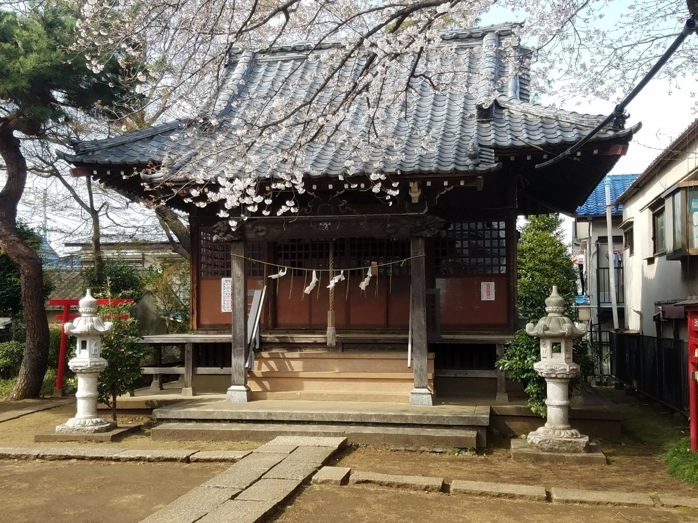

岐阜に住み名古屋で働き始めて3か月が経とうとしている。
3月中頃から、新型コロナウイルスの猛威により社会情勢が更に深刻化し、そろそろ一度東京に帰省しようかと考えていた予定は全て白紙になった。
勤務先である愛知県も一時全国で2番目に多い感染者数になり、家族から接客業である書店員の仕事を休めない僕を心配する連絡が増えていた。
しかし、3月下旬から東京の感染者数が急増し、ロックダウンや都市封鎖の可能性が出てきたというニュースが流れ始めてから、今度は僕が家族をより心配する状態になっている。
「今年は花見も無理だし寂しいね」
毎日張りつめている緊張の糸を緩めるために、そう投げかけることも必要だと思い、家族のグループメッセージに送った。
「そうねえ」
そんな母の何気ない一言を最後に何日か家族との連絡が途絶えていた。
「今日も大丈夫だった？」と毎日家族間で連絡し合うことすら、本当はどこかで疲労感があったのかもしれない。
4月2日。
母から写真付きで連絡が届いていた。
「今年の春はかわいそうだけど、こんなにも綺麗な桜を咲かせているよ」
それは地元にある小さな神社だった。神社参りが好きな母らしい写真だった。そこに映る桜は例年と変わりなくピンクの花弁を揺らしている。
いま住んでいる場所にも桜の木があるけれど、写真の桜が特別綺麗に見えたのは当たり前だった故郷が遠くに感じているからなのだと思う。
毎日会えるわけではない、家族。
毎日同じはずがない、日常。
東京に帰って会いたい人がいる。行きたいと願う懐かしい場所もある。
この先のことなんて誰もわからないけど、もし今度の春、故郷の桜をこの目で見れたなら。
桜の木の下で、みんなで笑い合っていたいな。ただそれだけを思って、今年の春を静かに見送りたいと思っている。
